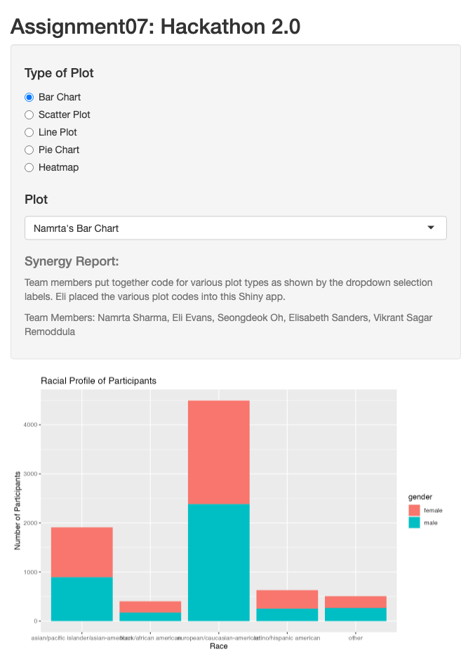

library(shiny)
library(tidyverse)── Attaching packages ─────────────────────────────────────── tidyverse 1.3.2 ──
✔ ggplot2 3.3.6 ✔ purrr 0.3.4
✔ tibble 3.1.8 ✔ dplyr 1.0.9
✔ tidyr 1.2.0 ✔ stringr 1.4.1
✔ readr 2.1.3 ✔ forcats 0.5.2
── Conflicts ────────────────────────────────────────── tidyverse_conflicts() ──
✖ dplyr::filter() masks stats::filter()
✖ dplyr::lag() masks stats::lag()library(reshape2)
Attaching package: 'reshape2'
The following object is masked from 'package:tidyr':
smithsdata_path <-"speed_dating_data.csv"
spd_dat <- read.csv(data_path)
spddat <- subset(spd_dat, select=c(race, gender, age, pf_o_att, match, age_o,
attr, exercise, attr_o))
# data for Vikrant's pie chart
slices <- c(51,52,53,54,55,56,57,58,59,60,61,62,63,64,65,66,67)
labels=c("Sports", "TV Sports","Exercise",
"Dining", "Museums", "Art", "Hiking",
"Gaming", "Clubbing","Reading", "TV", "Theater",
"Movies", "Concert", "Music", "Shopping",
"Yoga")
# data for Lizzie's line plot
match <- 1:10
race <- cumsum(rnorm(10))
data_lizzie <- data.frame(match,race)
spddat %>% mutate(race = recode(race,
'1' = "Black/African American",
'2' = "European/Caucasian-American",
'3' = "Latino/Hispanic American",
'4' = "Asian/Pacific Islander/Asian-American",
'5' = "Native American",
'6' = "Other")) -> spddat
spddat %>% mutate(gender = recode(gender,
'0' = "Women",
'1' = "Men")) -> spddat
spddat %>% mutate(match = recode(match,
'0' = "No Match",
'1' = "Match")) -> spddat
spddat <- na.omit(spddat)
# data for Vikrant's Bar Chart
spddat_match <- subset(spddat, secect=c(match, gender, age_o))
spddat_match <- spddat_match[spddat_match$match == "Match",] # get all those who matched
# data for Lizzie's heatmap
spddat_melt = subset(spddat, select=c(match, race, attr))
spddat_melt = melt(spddat_melt, value.name="attr") # Reorder dataUsing match, race as id variables# data for Namrta's Pie Chart
spddat_match2 <- subset(spddat, select=c(match, gender, race))
spddat_match2 <- spddat_match2[spddat_match2$match == "Match",] # get all those who matched
# Define UI for app that draws a histogram ----
ui <- fluidPage(
# App title ----
titlePanel("Assignment07: Hackathon 2.0"),
# Sidebar layout with input and output definitions ----
sidebarLayout(
# Sidebar panel for inputs ----
sidebarPanel(
radioButtons("type", h4("Type of Plot"),
choices=c("Bar Chart", "Scatter Plot", "Line Plot", "Pie Chart", "Heatmap")),
selectInput("plot", h4("Plot"), "N/A"),
helpText(h4("Synergy Report:"), "Team members put together code for
various plot types as shown by the dropdown selection labels.
Eli placed the various plot codes into this Shiny app."),
helpText("Team Members: Namrta Sharma, Eli Evans, Seongdeok Oh,
Elisabeth Sanders, Vikrant Sagar Remoddula")
),
# Main panel for displaying outputs ----
mainPanel(
plotOutput("plot")
)
)
)
# Define server logic required to draw a histogram ----
server <- function(input, output, session) {
observe({
updateSelectInput(session, "plot",
choices=switch(input$type,
"Bar Chart" = c("Namrta's Bar Chart",
"Seongdeok's Bar Chart",
"Vikrant's Bar Chart"),
"Scatter Plot" = c("Namrta's Scatter Plot",
"Seongdeok's Scatter Plot",
"Vikrant's Scatter Plot",
"Lizzie's Bubble Plot"),
"Line Plot" = c("Lizzie's Line Plot"),
"Pie Chart" = c("Namrta's Pie Chart",
"Vikrant's Pie Chart"),
"Heatmap" = c("Lizzie's Heatmap"))
)
})
output$plot <- renderPlot({
switch(input$plot,
"Namrta's Bar Chart" = ggplot(spddat, aes(x=race, fill=gender)) +
geom_bar() +
labs(x= "Race", y="Number of Participants",
title="Racial Profile of Participants"),
"Namrta's Scatter Plot" = ggplot(spddat, aes(x=age, y=pf_o_att)) +
geom_point(color="seagreen4") +
labs(x="Age", y="Preference of Attractivenes",
title="Preference of Attractiveness by age",
colour=sample),
"Namrta's Pie Chart" = ggplot(spddat_match2, aes(x = "", y=match, fill=race, group=race)) +
geom_bar(stat="identity") +
facet_grid(cols = vars(gender)) +
coord_polar("y", start = 0) +
theme_void(),
"Seongdeok's Bar Chart" = ggplot(spddat, aes(x = gender, fill = race)) +
geom_bar(position = "dodge"),
"Seongdeok's Scatter Plot" = ggplot(spddat, aes(x = gender,
y = age,
col = race)) +
geom_point(),
"Lizzie's Line Plot" = ggplot(data_lizzie, aes(x=match, y=race)) +
geom_line(color="#69b3a2", size=2,
alpha=0.9, linetype=2) +
ggtitle("Is attraction due to race?"),
"Vikrant's Pie Chart" = pie(slices, labels = labels,
main="Pie Chart of Commom Interests"),
"Vikrant's Scatter Plot" = ggplot(spddat, aes(x = match,
y = age_o,
col = gender)) +
geom_point(),
"Vikrant's Bar Chart" = ggplot(spddat_match) +
geom_bar(aes(x=age_o, fill=gender, group=gender),
position="dodge", color="#252525") +
scale_x_continuous(breaks=c(18, 25, 30, 35, 40, 45)) +
scale_fill_discrete(labels=c("Female", "Male"),
type=c("#a50f15", "#252525")) +
labs(title = "Which Age-group got more success ?",
fill = "Gender") +
xlab("Age") +
ylab("Number of Candidates") +
theme_light() +
theme(text = element_text(family="Times New Roman")),
"Lizzie's Heatmap" = ggplot(spddat_melt, aes(match, race)) +
geom_tile(aes(fill = attr)),
"Lizzie's Bubble Plot" = ggplot(spddat, aes(x = age, y = exercise, size=attr_o)) +
geom_point(alpha=0.5, color = 'steelblue') +
scale_size(range=c(-.0155, 2), name='Attractiveness by Exercise')
)
})
}
shinyApp(ui = ui, server = server)PhantomJS not found. You can install it with webshot::install_phantomjs(). If it is installed, please make sure the phantomjs executable can be found via the PATH variable.
Listening on http://127.0.0.1:6328